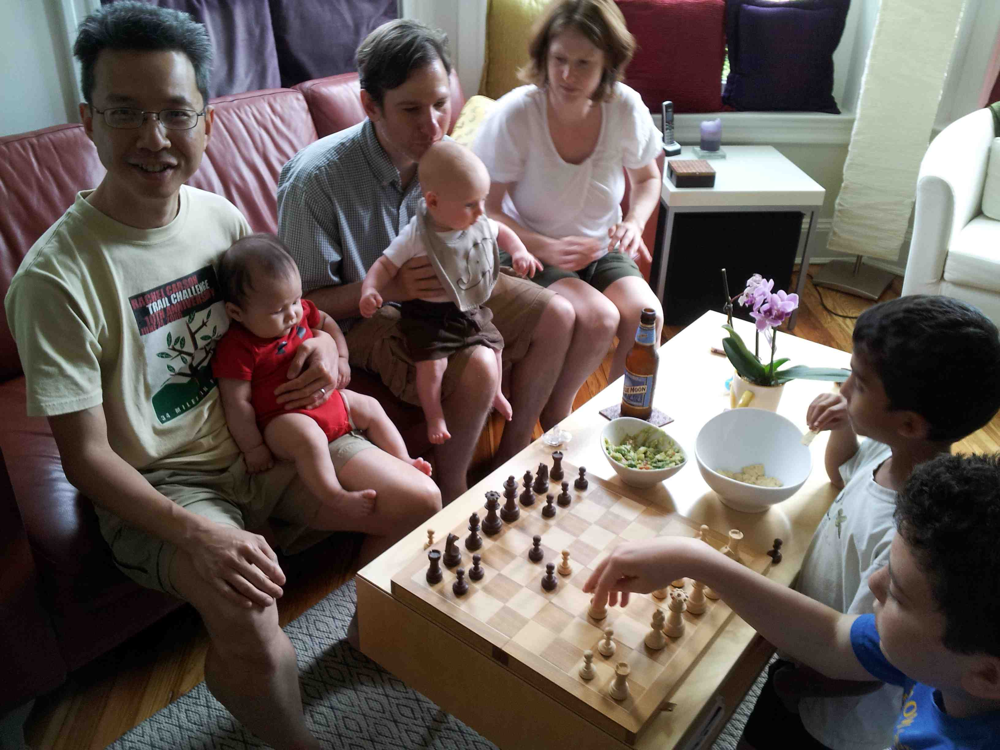
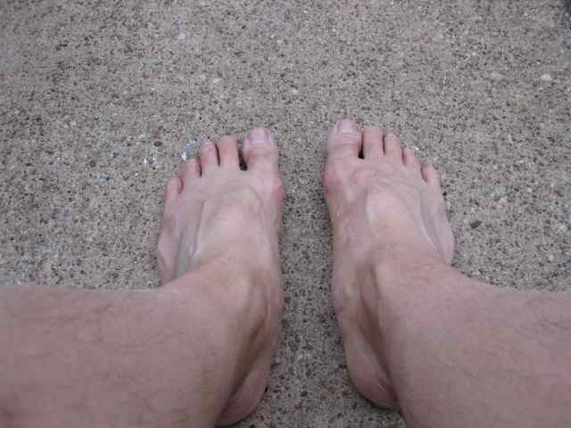
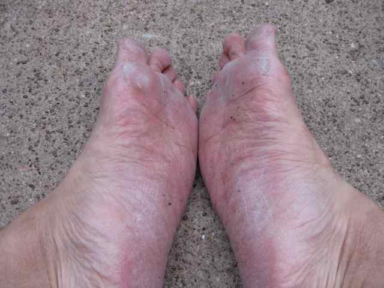

For almost two weeks, Abby and I were staying with my sister Linda (and her husband André), with whom we were staying for almost two weeks in order to help them with their three-month-old baby, my first nephew, Jack. They happened to hold a Memorial Day weekend party, inviting old friends of theirs as well as new friends with similarly-aged babies.
As people started arriving in the afternoon, I noticed a boy who was wearing a T-shirt for a chess camp from 2009 or something. I couldn’t help saying to him, “Oh, you play chess? Maybe we should play.” Someone (I think my sister?) started saying I used to be very good, so Benjamin got excited and next thing I knew, André had fetched his chess set and brought it out. We moved the chips and guacamole to make room on the coffee table and immediately started playing a game, while I continued baby duty holding Jack.
How to play chess with a stranger at a party

Me playing a Benoni against Benjamin while holding Jack
There are actually some subtle considerations in playing chess at a party with someone I’ve never met before. Here are a few:
How strong is my opponent? At what level should I play so that I can try to win, but not necessarily too easily?
Are there interested spectators? What kind of play would entertain or educate them most?
At a party, time is limited, and I don’t want to spend too much time playing chess (instead of eating or socializing with other people). So there is not enough time for very long thinks as would be the case for a classical tournament situation.
Here is a report on how things turned out in the three games I played at the party before I focused on eating the barbecue and socializing with everyone else:
Recently, I have had the opportunity to play chess casually with kids at parties. I could not help reflecting on my own childhood memories of playing chess. I feel that there was much I learned about life from the chess activities of my youth, whether casual or serious. This is the first of a planned series of posts about chess.
Chess Challenger III from 1977
This post is about the first time I played with a chess computer and was surprised to find myself winning.
May 28, 2012 · 2 minute read · Comments musicIrish flutemandolin
House of Musical Traditions in Takoma Park, MD One thing Abby and I wanted to do before we left Washington DC was to visit the House of Musical Traditions in Takoma Park, MD. We wanted to check out all their musical instruments. Abby wanted to look at their mandolin section, while I wanted to look at Irish flutes. I’ve been kind of thinking about getting an Irish flute since February when seeing again Gregory play his Irish flute at French dancing.
Read On →
May 18, 2012 · 2 minute read · Comments musicflute
Three months ago, I was having problems with my left hand primarily because of my short fingers not being able to comfortably use my inline G flute. I knew that I had to go to an offset G flute. Well, now I have one!
Azumi 3000 flute packaging I finally got my new Azumi flute, the 3000 model with offset G and split E, as recommended on Jen Cluff’s wonderful flute blog as a good “intermediate” flute.
Read On →
Although I have stopped writing about it, Abby and I have continued to do French dancing here in Pittsburgh. Tonight, for the first time, we finally attended the regular Monday night French and blues dance hosted by Lisa.
It was quite an intense evening for me, both playing French music for the first time and dancing blues for the first time.
Official poster of International Barefoot Running Day 2012
One year ago (May 1, 2011), I celebrated the first annual International Barefoot Running Day by running 0.6 mile on the streets of my neighborhood. That was the very first time in my life I was “brave” enough to run barefoot outside (other than one failed attempt I discuss below).
Today, I pushed the envelope by running a full 2 miles barefoot, including a 0.5 mile trail loop on Frick Park. This was my first time ever running barefoot on the trails.

My two feet

Soles of my two feet after barefoot run
Here’s the story of why I got into barefoot running, and what progress I’ve made in the past year.
Apr 29, 2012 · 2 minute read · Comments musicCarnegie Mellon UniversityStephen SchultzPittsburghJohann Sebastian BachBaroque fluterecorderErin Yanacektrumpet
I attended a free concert of the CMU Baroque Ensemble for the very first time!
The CMU Baroque Ensemble under Stephen Schultz has been around for over a decade, starting in 2002, but I had never attended one of their concerts, because basically, until I started playing recorder last year, I had very little interest in Baroque music.
But now I’m really immersing myself in Baroque music, so I decided to check out the student ensemble.
Read On →
Every spring, I like to do one or two of the Rachel Carson Trail Challenge goal training hikes for fun even though I no longer do the Rachel Carson Trail Challenge because three times was enough for me. Since this year’s Challenge proceeds east to west, all of the goal training hikes this year also go east to west.
The description of today’s hike, the second of eight that increase in length till the longest one in June:
Sunday, April 29, 2012
Leader: Brian Droz 412-848-4810
8.9 miles
Elevation change: 4925 ft.
“On this hike we start at the Bull Creek Road checkpoint location in Tarentum and quickly encounter a steep uphill climb followed by even steeper ups and downs - including Crawford Run hill and Murray Hill. We pass through Agan Park and end in Springdale. Meet at the Springdale Veterans Association Hall parking lot in Springdale. Directions: Take Route 28 to Exit #11 (Harmarville). After exiting onto Route 910 head towards Harmarville, turn left at the second traffic light onto Freeport Road and travel about 4 miles through 9 more traffic lights. The Springdale Veterans Association Hall entrance will be on your left just past the last light. Park on the far side of the lot.”
Three days ago, I suddenly saw this poster on a bulletin board in the hallway at work at CMU:
CMU poster for Baroque jam session
A night of music by some of these cool dead dudes.
A chance to hear CMU School of Music majors do their thing, 18th Century style.
An opportunity to bring your own instrument & play along.
I thought to myself, I have to go to this event, even at short notice!
I also experienced terror at the thought.
But I went, and survived. It was a life-changing experience for me.
I was so excited by this opportunity to jam with such esteemed musicians. Norman and Greenberg specialize in playing Irish, Scottish, Cape Breton and Baroque music. I’ve come to love playing the rhythmic, danceable music of the old days.
I learned a lot from the experience, and would like to share what I learned.